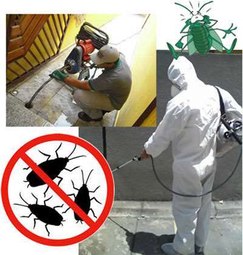
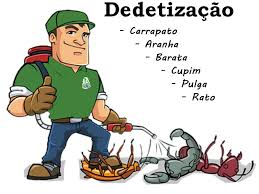
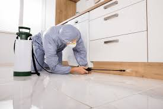
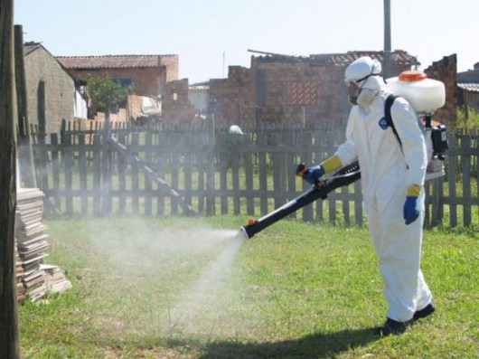
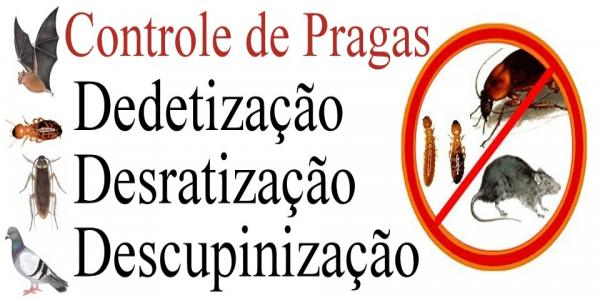
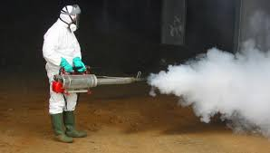

Empresa muito comprometida com resultados e satisfação dos seus clientes. Já solicitei seus trabalhos e fiquei muito satisteita desde o primeiro contato até a finalização. Indico, como já indiquei a vários conhecidos.
Desde 1994 com uma missão...
Atender com excelência às demandas dos clientes, oferecer e prestar serviços de Controle Integrado de Pragas com
qualidade, eficiência, segurança. Superar a expectativa dos nossos clientes e parceiros, melhorar a qualidade de
vida das pessoas, gerando riqueza de forma sustentável.
Ser uma empresa de referência, reconhecida como a melhor opção em controle de pragas por nossos clientes, colaboradores, fornecedores e investidores, pela qualidade de nossos produtos e serviços..
Integridade, o comprometimento, a valorização humana, a superação dos resultados, as melhorias contínuas, a inovação e a sustentabilidade.






Quem Somos
Zeropragas é junção de dois nomes “Zero” – Zero, zerar qualquer ameaça e “pragas” – pragas insetos ou doenças que atacam plantas, animais e seres humanos. Zeropragas é o estudo do comportamento das pragas, através desse estudo definimos a melhor maneira de combater quaisquer espécies de Pragas, DO COMPORTAMENTO AO CONTROLE SUSTENTÁVEL Presente no setor de Controle Integrado de Pragas desde 1994, com o apoio da família o biólogo formado na Universidade Mozi das Cruzes, decidiu abrir sua própria empresa especializada em Dedetização, Desratização, Descupinização e Higienização de caixas/Reservatório de água. A Equipe Zeropragas Saneamento Ambiental é profissional em estratégias de controle de pragas para cada situação seja em comércios, empresas, indústrias, residências e outros, onde as ações de combate a cupins, brocas, baratas, roedores, formigas, pulgas, traças, moscas, escorpiões, aranhas, aedes aegypti entre outras pragas, são cuidadosamente analisadas, pesquisadas, e posteriormente combatidas para que haja sucesso total e satisfação dos nossos clientes.Empresa muito comprometida com resultados e satisfação dos seus clientes. Já solicitei seus trabalhos e fiquei muito satisteita desde o primeiro contato até a finalização. Indico, como já indiquei a vários conhecidos.
Empresa muito profissional com grande experiência no serviço prestado, e atendimento muito bom. Foram super transparentes na proposta e execução do serviço de controle de pragas, a melhor que já contratamos, recomendo.
A Zeropragas é uma empresa excelente, custo benefício ótimo, atendimento maravilhoso. Grande abraço a toda equipe.